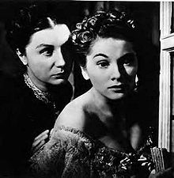

"Suspense thriller redirects here. For the general category "suspense/thriller" see Thriller (genre)
Thriller film, also known as suspense film or suspense thriller, is a broad film genre that evokes excitement and suspense in the audience.[1] The suspense element found in most films' plots is particularly exploited by the filmmaker in this genre. Tension is created by delaying what the audience sees as inevitable, and is built through situations that are menacing or where escape seems impossible
The cover-up of important information from the viewer, and fight and chase scenes are common methods. Life is typically threatened in a thriller film, such as when the protagonist does not realize that they are entering a dangerous situation. Thriller films' characters conflict with each other or with an outside force, which can sometimes be abstract. The protagonist is usually set against a problem, such as an escape, a mission, or a mystery
Screenwriter and scholar Eric R. Williams identifies thriller films as one of eleven super-genres in his screenwriters' taxonomy, claiming that all feature length narrative films can be classified by these super-genres.[undue weight? – discuss] The other ten super-genres are action, crime, fantasy, horror, romance, science fiction, slice of life, sports, war, and western.[4] Thriller films are typically hybridized with other super-genres; hybrids commonly including: action thrillers, fantasy and science fiction thrillers. Thriller films also share a close relationship with horror films, both eliciting tension. In plots about crime, thriller films focus less on the criminal or the detective and more on generating suspense. Common themes include, terrorism, political conspiracy, pursuit and romantic triangles leading to murder.
Due to the what Rubin describe as a "wide, imprecise scope", it is unwieldy to attempt a comprehensive history of individual genres, including the thriller, and suggests it better to view the style in terms of cycles.[21]
Prior to the development of films, the genre has its connections to broadly-based fiction of the 18th century.[22] Elements of the thriller are traced to the earliest gothic novel with Horace Walpole's The Castle of Otranto (1765) which led to Matthew Lewis's The Monk (1796) and Ann Radcliffe's The Mysteries of Udolpho (1794) and The Italian (1797). [22] Rubin noted that the extended vunerability of the enthralled protagonists and victims in the thriller anticipated the thriller genre, a statement echoed by Robert D. Hume's 1969 essay which asserts that the Gothic novel involved a reader in a new ay, with increased emphasis on suspense, sensation and emotion opposed to moral and intellectual focuses. [23] The gothics being considered thrillers is problematic as they are set in antiquated decaying worlds and fail the tradition of being considered "modern".[23] The second literay form that predated thrillers was the Victorian sensation novel, starting with Wilkie Collins' The Woman in White (1859-1860) which stripped the gothic genre of its mysticism and brought to a contemporary time closer to every day life.[24] These sensation novels often were published in serialized form, sometimes concluding their installments with cliffhangers called "climax and curtain".[25] The third of the proto-types to the thriller was early detective and mystery fiction, such as Edgar Allan Poe's "The Murders in the Rue Morgue" (1841), which is widely considered the first detective story.[25] The detective story drew upon the previously mentioned forms, and is shown through stories such as the Sherlock Holmes novel The Hound of the Baskervilles.[26]
At these same fair grounds, is where the earliest venues for film exhibition swith peep-show arcades which film historian Tom Gunning described as "the cinema of attractions".[28] These films provided early novelty-oriented shorts that provided surprise, amazement, laughter, or sexual stimulation with no narrative. The sensation of motion in these early films was later input into a framework known as the "chase film" which came into prominence in 1903.These films were often produced in Britain and France and employed minimal narrative for an extended chase scene that led to one of the most commercially celebrated American films of the period with The Great Train Robbery (1903).[29] Elements of heist films are seen in the film, with its depictions of ingeniously planned robberies, as well as the thriller's central emphasis on accelerated motion.[29] [30] Chase films were limited in scope, but their emphasis on the chase sequence would extended into film in the future such as On Her Majesty's Secret Service (1969), Vanishing Point (1971), and Speed (1994).[31]
 The early 1930s saw the rise of two film genre movements: the gothic styled horror film and the gangster film.[46] Universal Pictures was the leader of the horror genre in the early 1930s with its expressionist-derived atmosphere that started with two big hits film: Dracula (1931) and Frankenstein (1931).[47] Rubin noted that both films lacked the thriller's fundamental tension between the familiar and exotic or adventurous.[48] Also in the early 1930s, the gangster film arrived with early major films including Mervyn LeRoy's Little Caesar (1930), William A. Wellman's The Public Enemy (1932) and Howard Hawks Scarface (1932).[48] These films centered on the rise of and fall of the criminal with Rubin noting that suspense in these films was "relatively slight", with both genres leaving an imprint on subsequent forms of the thriller with mid-1930s G-Man films, the early detective films of the 1940s, and the gangster films of the 1950s.[49] The gangster film itself, entrusted the modern urban environment with larger-than-life overtones.[50]
The early 1930s saw the rise of two film genre movements: the gothic styled horror film and the gangster film.[46] Universal Pictures was the leader of the horror genre in the early 1930s with its expressionist-derived atmosphere that started with two big hits film: Dracula (1931) and Frankenstein (1931).[47] Rubin noted that both films lacked the thriller's fundamental tension between the familiar and exotic or adventurous.[48] Also in the early 1930s, the gangster film arrived with early major films including Mervyn LeRoy's Little Caesar (1930), William A. Wellman's The Public Enemy (1932) and Howard Hawks Scarface (1932).[48] These films centered on the rise of and fall of the criminal with Rubin noting that suspense in these films was "relatively slight", with both genres leaving an imprint on subsequent forms of the thriller with mid-1930s G-Man films, the early detective films of the 1940s, and the gangster films of the 1950s.[49] The gangster film itself, entrusted the modern urban environment with larger-than-life overtones.[50]
Further spy films were made, including The House on 92nd Street which now encompassed anti-communist themes that was inaugurated with films like The Iron Curtain (1948).[61] These film heavily drew on 1930s gangster film conventions, with the American branch of the communist parties being depicted like a gangster organization. This cycle continued into the 1940s with I Was a Communist for the FBI (1951), The Red Menace (1949), and Samuel Fuller's Pickup on South Street (1953).[62]
Offshoots of the police thriller is the vigilante film, in which an avenger in an urban setting throws off the restraints of the super cop of the police thrillers to operate as a loner without a badge or uniform. The main characters usually revolve around personal revenge and desire to cleanse society of its evil doers. Examples include the Death Wish film series, Taxi Driver (1976) and Ms. 45 (1981).[92] A cycle of action films featuring black leads that came from the police thriller, vigilante films, and blaxploitation films arrived with the 1970s.[92] The films predominantly feature loose-cannon private eyes such as in Shaft (1971), Slaughter (1972) and Coffy (1973) or hustlers such as in Super Fly (1972) and The Mack (1973).[93] The films were often derivations of earlier films such as Cool Breeze (1972), a remake of The Asphalt Jungle, Hit Man (1972) a remake of Get Carter (1971), and Black Mama, White Mama (1973) a remake of The Defiant Ones (1958). The cycle generally slowed down by the mid 1970s.[94]
In the early 1990s, thrillers had recurring elements of obsession and trapped protagonists who must find a way to escape the clutches of the villain—these devices influenced a number of thrillers in the following years. Rob Reiner's Misery (1990), based on a book by Stephen King, featured Kathy Bates as an unbalanced fan who terrorizes an incapacitated author (James Caan) who is in her care. Other films include Curtis Hanson's The Hand That Rocks the Cradle (1992) and Unlawful Entry (1992), starring Ray Liotta.[99]
Action thriller is a blend of both action and thriller film in which the protagonist confronts dangerous adversaries, obstacles, or situations which he/she must conquer, normally in an action setting. Action thrillers usually feature a race against the clock, weapons and explosions, frequent violence, and a clear antagonist.[101] Examples include, Phantom Raiders, Nick Carter Master Detective, Dirty Harry, Taken,[102] The Fugitive,[103] Snakes on a Plane, Speed, The Dark Knight, The Hurt Locker,[104] The Terminator, Battle Royale, the Die Hard series, and the Bourne series.[105]
Comedy thriller is a genre that combines elements of humor with suspense. Such films include Silver Streak, Dr. Strangelove, Charade, Hera Pheri, Malamaal Weekly, Kiss Kiss Bang Bang, In Bruges, Mr. and Mrs. Smith, Grosse Point Blank, The Thin Man, The Big Fix, Pocket Listing (film), The Lady Vanishes, and Game Night.